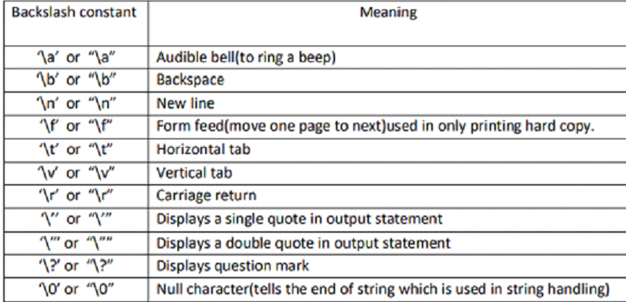

Aula 4 - Bibliotecas, Excel e TXTs
Bibliotecas
- Repositório das Bibliotecas: https://pypi.org/
-
Comando para instalar bibliotecas externas:
-
Comando para usar biblioteca no código
# Importa a biblioteca com todas as funções dela import nome_da_biblioteca # import xlrd # Importa a biblioteca e permite criar um "apelido" pra ela import nome_da_biblioteca as ndb # Ex.: import pandas as pd # Importa uma função específica de dentro da biblioteca from nome_da_biblioteca import funcao # Ex.: from time import sleep
Manipulação de Arquivos
- Abrir o arquivo:
-
Para criar:
```python arqv = open('nome_do_arquivo.txt', 'w') ``` -
Para ler:
```python arqv = open('nome_do_arquivo.txt', 'r') ``` -
Para continuar um texto:
```python arqv = open('nome_do_arquivo.txt', 'a') ``` -
Escrever dentro do .txt:
-
Fechar o arquivo:
Interação com o SO:
- os:
-
Importar a biblioteca:
```python import os ``` -
Renomear um arquivo:
```python os.rename('arquivo_teste.txt', 'arquivo_modificado.txt') ``` -
Remover um arquivo da pasta:
```python os.remove('arquivo_modificado.txt') ``` -
Listar os arquivos presentes na pasta:
```python os.listdir('.') ``` -
Aponta a execução do Python para uma pasta em específico:
```python os.chdir('') ``` -
glob:
-
Importar a biblioteca:
```python import glob ``` -
Listar arquivos do diretório pela sua extensão:
```python glob.glob(r'.\*.txt') ``` -
shutil:
-
Importar a biblioteca:
```python import shutil ``` -
Movimentar um arquivo para outra pasta:
```python shutil.move('arquivo_modificado.txt', r'.\pasta_move\arquivo_modificado.txt') ``` -
Copiar um arquivo para outra pasta:
```python shutil.copy(r'.\pasta_move\arquivo_modificado.txt', r'.\arquivo_modificado_copy.txt') ```
Bibliotecas Excel:
xlrd
-
Importar a biblioteca:
-
Abre um arquivo Excel (XLS):
-
Seleciona a aba do Excel:
-
Pega valores da primeira coluna:
openpyxl
-
Importa a biblioteca:
-
Abrir um arquivo Excel (XLS ou XLSX):
-
Apresenta o nome de todas as abas do Excel aberto:
-
Seleciona a aba do Excel:
-
Ler o valor da primeira célula (A1):
-
Apresentar números de linhas:
-
Percorre uma coluna inteira do Excel:
-
Pegar valores das três colunas, passando por todas as linhas:
for linha in range(2, sheet.max_row+1): nome = sheet.cell(linha, 1).value unidade = sheet.cell(linha, 2).value valor = sheet.cell(linha, 3).value print(f'O produto {nome*} teve* {unidade} unidades vendidas no valor unitário de R${valor}') # output: # O produto Chiclete foi teve 45 unidades vendidas no valor unitário de R$1 # O produto Barra de Chocolate foi teve 23 unidades vendidas no valor unitário de R$4 # O produto Agua mineral foi teve 66 unidades vendidas no valor unitário de R$2 # O produto Jornal foi teve 4 unidades vendidas no valor unitário de R$0.5 # O produto Salgadinho foi teve 16 unidades vendidas no valor unitário de R$2.5 -
Fechar o arquivo Excel -
pandas
-
Importar a biblioteca:
-
Ler arquivo Excel:
-
Selecionar uma coluna:
-
Apresenta as abas disponíveis do Excel:
xlsxwriter
-
Importar a biblioteca:
-
Criar arquivo Excel:
-
Criar aba no arquivo Excel:
-
Colocar palavras em Negrito:
-
Escreve cabeçalho em negrito no Excel:
-
Cria valores para serem adicionados em formato de tabela:
-
Looping para escrever valores em formato de tabela:
-
Fechar e salvar o arquivo Excel:
Extras
Caracteres especiais:

- Outras opções: https://www.python-excel.org/